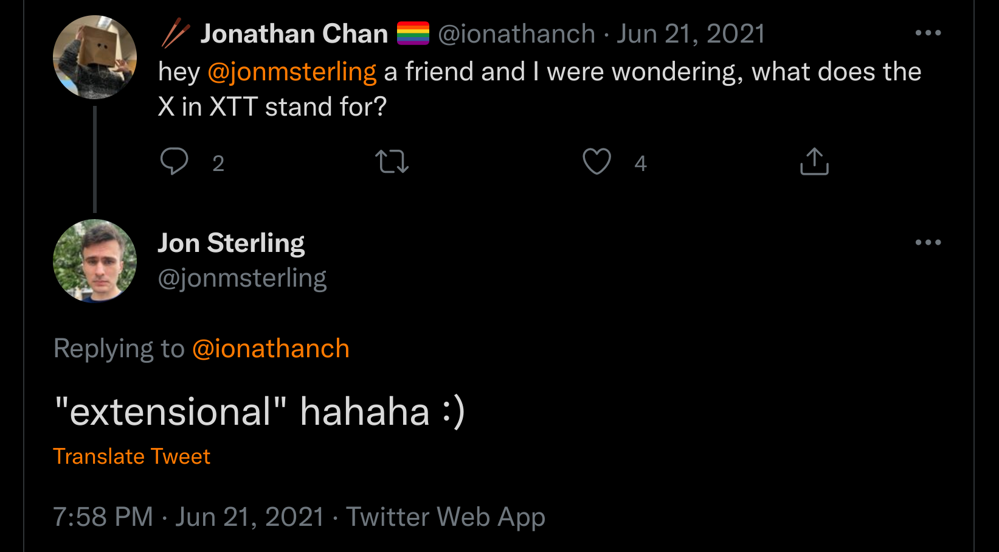

(https://twitter.com/jonmsterling/status/1407035198672343045)
\[ \newcommand\Type{\mathord\bigstar} \newcommand\Rule[3]{ \frac{\begin{gathered}#2\end{gathered}}{#3}\:[\textsf{#1}] } \newcommand\Refl{\mathsf{refl}} \newcommand\Subst{\mathsf{subst}} \]
separate definitional & propositional equality
“convertibility” \(\equiv\) (e.g. \(\alpha\beta\eta\) equality) vs “identity type” \(=\)
explicit coercion over propositional equalities (\(\Subst\))
\[ \begin{gathered} \Rule{id-f}{A : \Type \qquad x, y : A}{x =_A y : \Type} \qquad \Rule{id-i}{x : A}{\Refl_x : x =_A x} \\[1em] \Rule{id-e}{ A : \Type \qquad P : A \to \Type \qquad x, y : A \qquad e : x = y \qquad p : P \; x }{ \Subst_P \; e \; p : P \; y } \end{gathered} \]
undecidable typechecking 🙀
“equality reflection” \[ \Rule{reflect}{e : x = y}{x \equiv y} \]
nice properties like functional extensionality are derivable \[ \Rule{funext*}{x : A \vdash f \; x \equiv g \; x}{f \equiv g} \]
no equality reflection
decidable type checking
fun ext gained by other means
like OTT but the specifics are different
(no univalence)
\[ \newcommand\EQ\Coloneqq \newcommand\OR{\mathrel|} \newcommand\ORR{\mathrel{\mathrlap{\mkern9mu|}{\hphantom\EQ}}} \]
\[ \newcommand\Eq{\mathsf{Eq}} \newcommand\With{\mathsf{with}} \newcommand\Goes\hookrightarrow \]
a [pseudo]type called the interval, with endpoints called 0 and 1
the interval might have extra structure or operations. not here though
an equality is like a function from the interval to a normal type.
the images of 0 and 1 are the left and right of the equation. for example:
you can think of them as paths but that’s less important than in hott
\[ \newcommand\Fst{\mathsf{fst}} \newcommand\Snd{\mathsf{snd}} \]
\[ \begin{aligned} M, N, A, B &\EQ x &\text{variable} \\ &\ORR (x : A) \to B \OR \lambda x. M \OR M \; N & \text{functions} \\ &\ORR (x : A) \times B \OR \langle M, N \rangle \OR \Fst \; M \OR \Snd \; M & \text{pairs} \\ &\ORR \dotsb \\[.75em] \Gamma, \Delta &\EQ \cdot \OR \Gamma, x: A &\text{type context} \end{aligned} \]
cube stuff (but no operations like \(\wedge\) etc)
used for equality
\[ \begin{aligned} r, s &\EQ 0 \OR 1 \OR i &\text{dimension} \\ \Psi, \Phi &\EQ \cdot \OR \Psi, i \OR \Psi, r = s &\text{dim. context (``cube'')} \\[.75em] M, N, A, B &\EQ \dotsb & \text{(terms contd)} \\ &\ORR \Eq_{i.A} \; M \; N \OR \lambda i. M \OR M \; r &\text{equality proofs} \\ &\ORR [i. A] \downarrow^r_{r'} M &\text{coercion} \\ &\ORR [i. A] \downarrow^r_{r'} M \; [s \; \With \; 0 \Goes j.N_0 \mid 1 \Goes j.N_1] &\text{composition} \end{aligned} \]
\[ \Psi \mid \Gamma \vdash M : A \]
reminder: Ψ is cube, Γ is types, M is subj, A is type
\[ \Rule{false-ty}{\Psi \vdash 0 = 1}{\Psi \mid \Gamma \vdash M : A} \qquad \Rule{false-eq}{\Psi \vdash 0 = 1}{\Psi \mid \Gamma \vdash M = N : A} \qquad \text{etc} \]
\[ \newcommand\eps\varepsilon \newcommand\Dim{\;\mathbf{dim}} \]
\[ \begin{gathered} \Rule{eq-f}{ \Psi, i \mid \Gamma \vdash A : \Type \qquad \overline{\Psi, i, i = \eps \mid \Gamma \vdash N_\eps : A} }{ \Psi \mid \Gamma \vdash \Eq_{i.A} \; N_0 \; N_1 : \Type } \\[.75em] \Rule{eq-i}{ \Psi, i \mid \Gamma \vdash M : A \qquad \overline{\Psi, i, i = \eps \mid \Gamma \vdash M = N_\eps : A} }{ \Psi \mid \Gamma \vdash \lambda i. M : \Eq_{i. A} \; N_0 \; N_1 } \\[.75em] \Rule{eq-e}{ \Psi \vdash r \Dim \qquad \Psi, i \mid \Gamma \vdash A : \Type \\ \overline{\Psi, i, i = \eps \mid \Gamma \vdash N_\eps : A} \qquad \Psi \mid \Gamma \vdash M : \Eq_{i. A} \; N_0 \; N_1 }{ \Psi \mid \Gamma \vdash M \; r : A[r/i] } \end{gathered} \]
\[ \begin{gathered} \Rule{coe}{ \Psi \vdash r, r' \Dim \qquad \Psi, i \mid \Gamma \vdash A : \Type \qquad \Psi \mid \Gamma \vdash M : A[r/i] }{ \Psi \mid \Gamma \vdash [i. A] \downarrow^r_{r'} M : A[r'/i] } \\[.75em] \Rule{coe-b}{ \Psi \mid \Gamma \vdash M : A[r/i] }{ \Psi \mid \Gamma \vdash ([i. A] \downarrow^r_r M) = M : A[r/i] } \end{gathered} \]
\[ \begin{gathered} \Rule{bsep}{ \Psi \vdash r \Dim \qquad \overline{\Psi, r = \eps \mid \Gamma \vdash M = N : A} }{ \Psi \mid \Gamma \vdash M = N : A } \end{gathered} \]
\[ \newcommand\DD{\texttt} \newcommand\VV{\mathit} \newcommand\Nat{\mathbb{N}} \]
\(\DD{f}, \DD{g}: (x: A) \to B \; x\)
\(\DD{fg} : (x : A) \to \Eq_{\_. B \; x} (f \; x) (g \; x)\)
\(\lambda i. \lambda x. \DD{fg} \; x \; i : \Eq_{\_. (x: A) \to B \; x} \; f \; g\)
\(\DD{zeroR} : (m : \Nat) \to m = m + \DD{Z}\)
\(\DD{Vec} : \Type \to \Nat \to \Type\)
\(\VV{xs}: \DD{Vec} \; \Nat \; n\)
\([i. \DD{Vec} \; \Nat \; (\DD{zeroR} \; n \; i)] \downarrow^0_1 \VV{xs} : \DD{Vec} \; \Nat \; (n + \DD{Z})\)